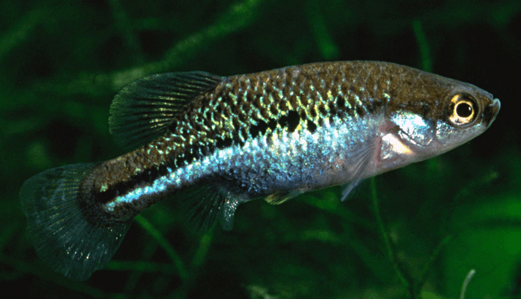

Systématique
- Ordre : Cyprinodontiformes
- Famille : Goodeidae
- Genre : Allotoca
- Espèce : A. maculata

Allotoca maculata est l'un des membres les plus menacés du genre Allotoca, originaire de l'État de Jalisco au Mexique. Cette espèce est actuellement classée comme étant en danger critique d'extinction (CR). Sa distribution est extrêmement limitée, se concentrant principalement dans la lagune de Magdalena et les bassins versants associés.
C'est un petit poisson dont les mâles mesurent environ 3 à 4 cm et les femelles jusqu'à 5,5 cm. Le corps est relativement haut comparé aux autres espèces du genre. Le nom maculata fait référence aux taches sombres irrégulières qui parsèment les flancs, particulièrement visibles chez les femelles. La coloration de base est gris-vert à argentée. Chez le mâle, on observe des reflets bleutés sur les flancs et une bordure noire sur la nageoire dorsale et anale, tandis que la femelle présente une coloration plus terne mais des motifs tachetés plus contrastés le long de la ligne latérale.
Dans la nature, Allotoca maculata préfère les eaux stagnantes ou à courant très lent, souvent avec une forte présence de végétation aquatique et d'algues. C'est une espèce timide qui utilise les herbiers denses pour se cacher des prédateurs.
En captivité, c'est un poisson pacifique qui doit être maintenu de préférence en bac spécifique pour garantir sa survie et sa reproduction. Il est particulièrement sensible à la qualité de l'eau et aux températures trop élevées. Le maintien d'un groupe social est recommandé pour observer son comportement naturel. L'espèce peut se montrer stressée en présence de compagnons de bac trop actifs ou agressifs.
Mode : Vivipare trophotaénial.
Le cycle de reproduction est typique des Goodeinae. La gestation dure entre 50 et 60 jours. Les portées sont généralement modestes, avec 10 à 20 alevins par portée pour une femelle mature. Les nouveau-nés naissent avec des trophotaeniae (extensions ombilicales) visibles qui se résorbent rapidement. Les alevins sont grands à la naissance (environ 10-14 mm) et peuvent consommer des nauplies d'artémias ou de la nourriture fine dès le premier jour. Le GWG souligne l'importance de températures fraîches pour assurer une fertilité constante.
Dimorphisme sexuel : Très marqué. Le mâle possède un andropode (premiers rayons de l'anale raccourcis et séparés). Les mâles sont plus petits, plus colorés avec des reflets métalliques et des nageoires bordées de noir. Les femelles sont plus corpulentes, présentent un abdomen plus rebondi et portent des taches sombres bien définies sur les flancs.
Espérance de vie : 3 à 4 ans en moyenne en aquarium, parfois plus dans des conditions optimales avec un repos hivernal thermique.
L'espèce est endémique de la Laguna de Magdalena et de quelques sources isolées dans la région du Volcán de Tequila au Jalisco. Son habitat naturel se compose d'eaux calmes, peu profondes (souvent moins de 1 m), avec des fonds vaseux ou rocheux riches en sédiments organiques. La végétation aquatique y est historiquement dense (Ceratophyllum, Potamogeton).
Ces milieux subissent de fortes pressions anthropiques : pollution agricole, assèchement des zones humides et introduction de carpes et de tilapias. Ces facteurs, combinés à la distribution naturellement restreinte de l'espèce, placent A. maculata dans une situation de survie critique.
Répartition

Origine naturelle :
- Mexique : État de Jalisco.
- Bassin : Bassins endoréiques de la région de Magdalena et Ameca.
- Localité : Laguna de Magdalena et sources environnantes.
Statut : En danger critique d'extinction (CR). Les populations sauvages sont en déclin drastique.
Paramètres de maintenance
Température : 18 à 22 °C (optimal). Une baisse nocturne et saisonnière est bénéfique.
pH : 7,0 à 8,0.
GH : 8 à 15 °dGH.
Courant : Très faible ou absent.
Volume conseillé : 80 L pour un petit groupe. La présence de nombreuses plantes est impérative.
Régime alimentaire
Régime : Omnivore.
Le GWG indique une préférence pour les petits invertébrés, les larves d'insectes et une part non négligeable d'algues (aufwuchs). En captivité, une alimentation variée incluant des granulés à base végétale et des proies vivantes ou congelées est nécessaire pour éviter les carences.